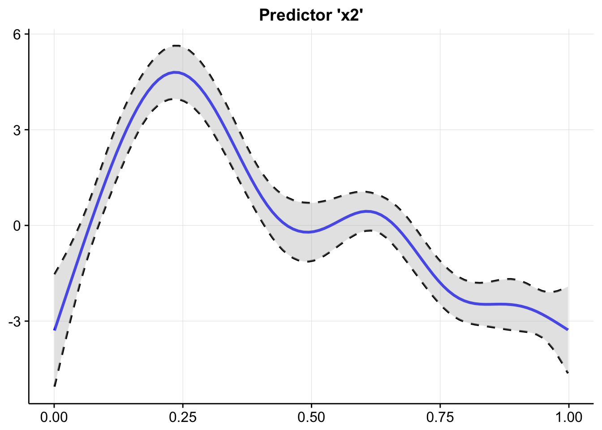
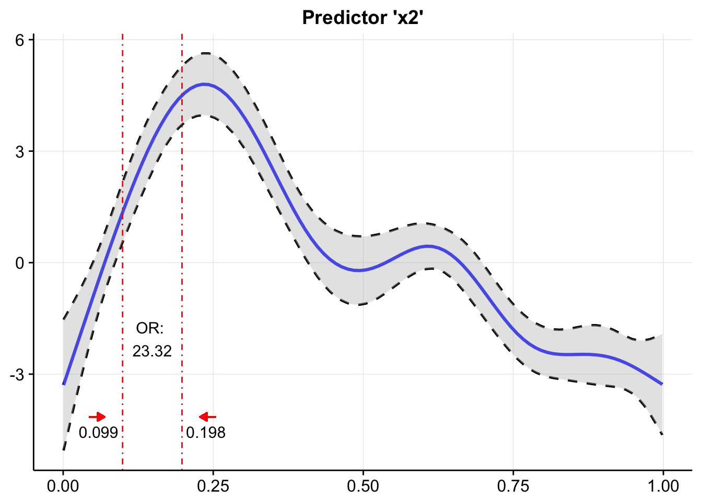
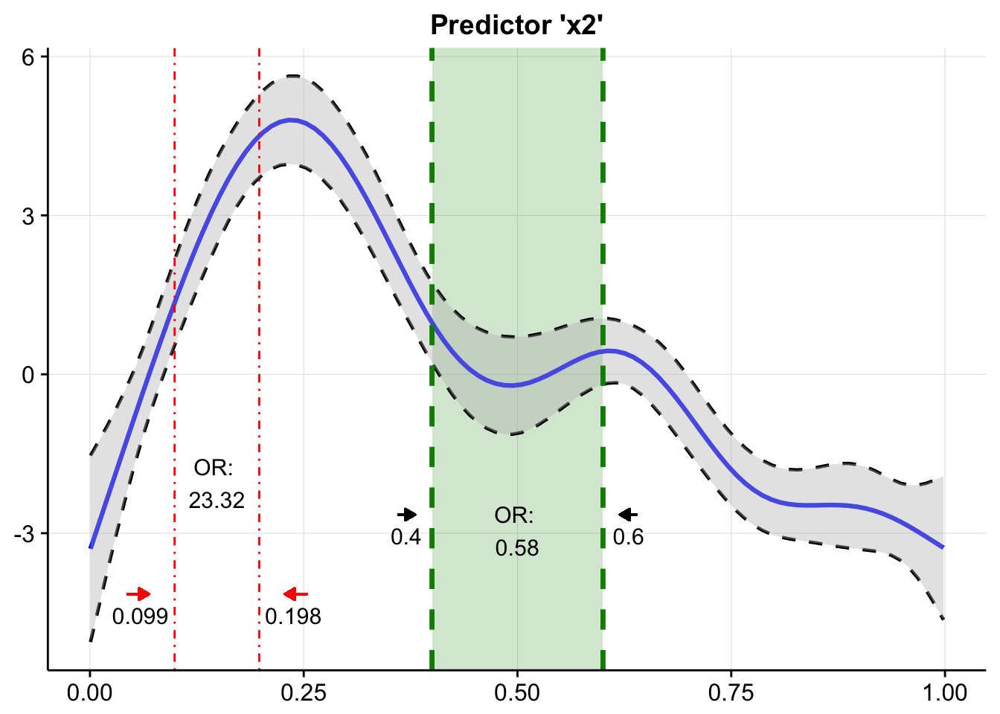

Functions for calculation and plotting of odds ratios of Generalized Additive (Mixed) Models and Generalized Linear (Mixed) Models with a binomial response variable (i.e. logistic regression models).
Installation
Install from CRAN:
install.packages("oddsratio")Get the development version from Github:
devtools::install_github("pat-s/oddsratio", build_vignettes = TRUE)Examples
GLM
Odds ratio calculation of predictors gre & gpa of a fitted model fit.glm with increment steps of 380 and 5, respectively.
For factor variables (here: rank with 4 levels), automatically all odds ratios corresponding to the base level (here: rank1) are returned including their respective confident intervals. The default level is 95%. However, other levels can be specified with the param CI. Data source: http://www.ats.ucla.edu/stat/r/dae/logit.htm
library(oddsratio)
dat <- read.csv("http://www.ats.ucla.edu/stat/data/binary.csv")
dat$rank <- factor(dat$rank)
fit.glm <- glm(admit ~ gre + gpa + rank, data = dat, family = "binomial")
calc.oddsratio.glm(data = dat, model = fit.glm,
incr = list(gre = 380, gpa = 5, CI = 0.95))## predictor oddsratio CI.low (2.5 %) CI.high (97.5 %) increment
## 1 gre 2.364 1.054 5.396 380
## 2 gpa 55.712 2.229 1511.282 5
## 3 rank2 0.509 0.272 0.945 Indicator variable
## 4 rank3 0.262 0.132 0.512 Indicator variable
## 5 rank4 0.212 0.091 0.471 Indicator variableGAM
For GAMs, the calculation of odds ratio is different. Due to its non-linear definition, odds ratios do only apply to specific value changes and are not constant throughout the whole value range of the predictor as for GLMs. Hence, odds ratios of GAMs can only be computed for one predictor at a time by holding all other predictors at a fixed value while changing the value of the specific predictor. Confident intervals are currently fixed to the 95% level for GAMs. Data source: ?mgcv::predict.gam()
Here, the usage of calc.oddsratio.gam() is shown by calculating odds ratios of pred x2 for a 20% steps across the whole value range of the predictor.
suppressPackageStartupMessages(library(mgcv))
set.seed(1234)
n <- 200
sig <- 2
dat <- gamSim(1, n = n,scale = sig, verbose = FALSE)
dat$x4 <- as.factor(c(rep("A", 50), rep("B", 50), rep("C", 50), rep("D", 50)))
fit.gam <- mgcv::gam(y ~ s(x0) + s(I(x1^2)) + s(x2) + offset(x3) + x4, data = dat)
calc.oddsratio.gam(data = dat, model = fit.gam, pred = "x2",
percentage = 20, slice = TRUE)## predictor value1 value2 perc1 perc2 oddsratio CI.low (2.5%)
## 1 x2 0.001 0.200 0 20 2510.77 1091.68
## 2 x2 0.200 0.400 20 40 0.03 0.03
## 3 x2 0.400 0.599 40 60 0.58 0.56
## 4 x2 0.599 0.799 60 80 0.06 0.06
## 5 x2 0.799 0.998 80 100 0.41 0.75
## CI.high (97.5%)
## 1 5774.53
## 2 0.03
## 3 0.60
## 4 0.06
## 5 0.22If you want to compute a single odds ratio for specific values, simply set param slice = FALSE:
calc.oddsratio.gam(data = dat, model = fit.gam,
pred = "x2", values = c(0.099, 0.198))## predictor value1 value2 oddsratio CI.low (2.5%) CI.high (97.5%)
## 1 x2 0.099 0.198 23.32353 23.30424 23.34283From version 0.3.0 on (Github version 0.2.0.9000) you can now do the following things:
- Plot smoothing functions of GAM(M)s
pl.smooth.gam(fit.gam, pred = "x2", title = "Predictor 'x2'")
- Insert the calculated odds ratios into the smoothing function
plot.object <- pl.smooth.gam(fit.gam, pred = "x2", title = "Predictor 'x2'")
or.object <- calc.oddsratio.gam(data = dat, model = fit.gam,
pred = "x2", values = c(0.099, 0.198))
plot <- add.oddsratio.into.plot(plot.object, or.object, or.yloc = 3,
values.xloc = 0.04, line.size = 0.5,
line.type = "dotdash", values.yloc = 0.5,
arrow.col = "red")
plot
If you want to insert multiple odds ratios, just go on!
or.object2 <- calc.oddsratio.gam(data = dat, model = fit.gam, pred = "x2",
values = c(0.4, 0.6))
add.oddsratio.into.plot(plot, or.object2, or.yloc = 2.1, values.yloc = 2,
line.col = "green4", text.col = "black",
rect.col = "green4", rect.alpha = 0.2,
line.alpha = 1, line.type = "dashed",
arrow.xloc.r = 0.01, arrow.xloc.l = -0.01,
arrow.length = 0.01, rect = T) 